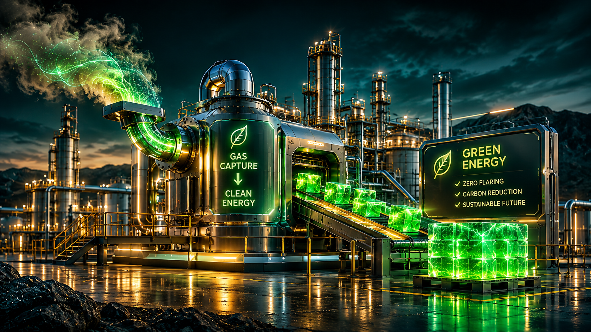
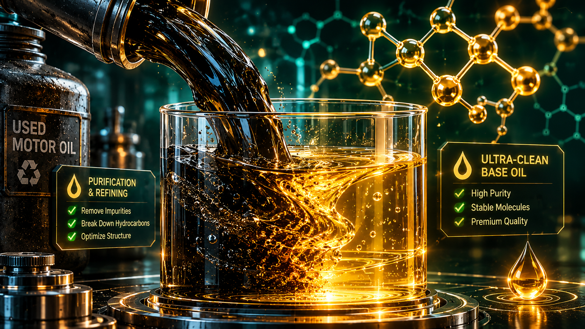

Paths to Solutions

Flare Gas Capture Technology

Used Oil Re-refining
We don't just identify gaps; we outline concrete, costed, and measurable ways to fix them. Every object on our map is paired with 2–3 practical options, ranging from quick fixes to long-term systemic changes.
Methodology: How We Classify Solutions
- Fast (Quick Fix): 3–12 months. Low to medium cost. Immediate risk reduction (e.g., leak repair, capping wells).
- Medium (Technological): 1–3 years. Medium to high cost. Significant reduction (e.g., flare gas capture, re-refining plants).
- Long (Systemic): 3–5+ years. High cost. Complete elimination of the gap (e.g., regional gas grids, full ecosystem restoration).
Global Solutions Database
Below is a live list of solutions extracted from our database. Click on any object to see its full details.
| Object | Solution Option | Type | Effect | Cost |
|---|